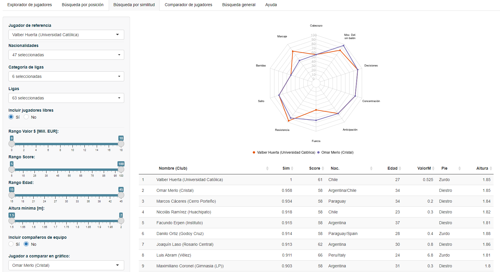
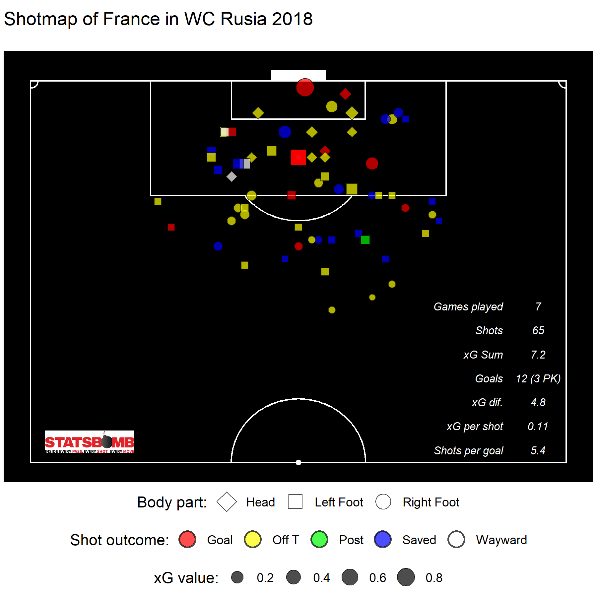
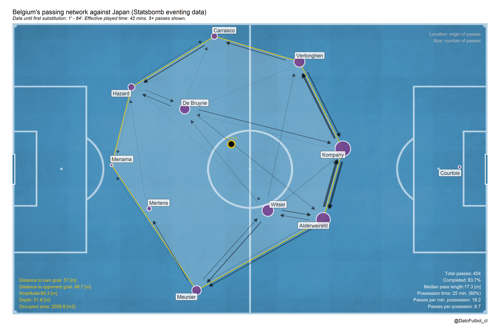
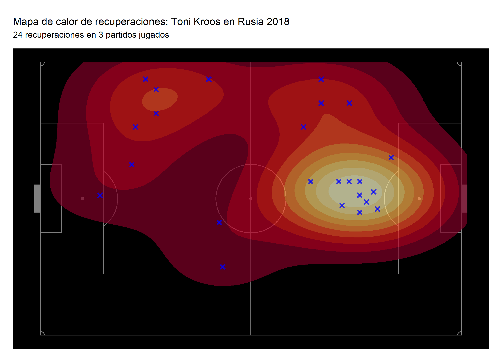
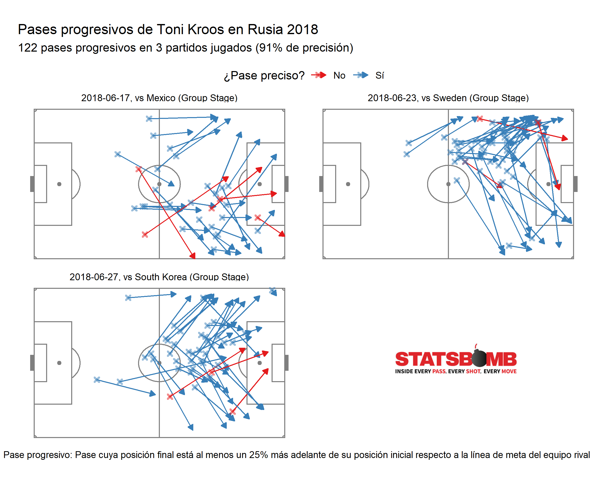
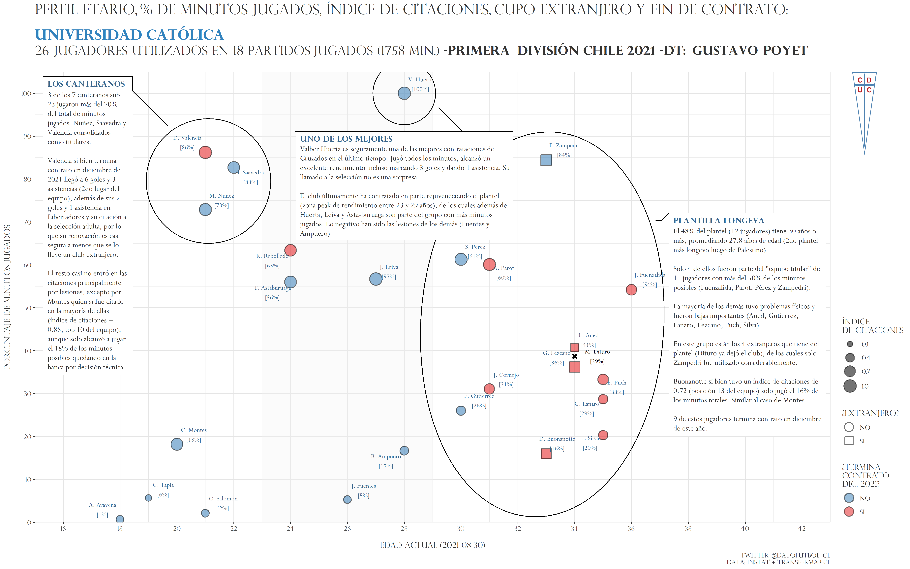
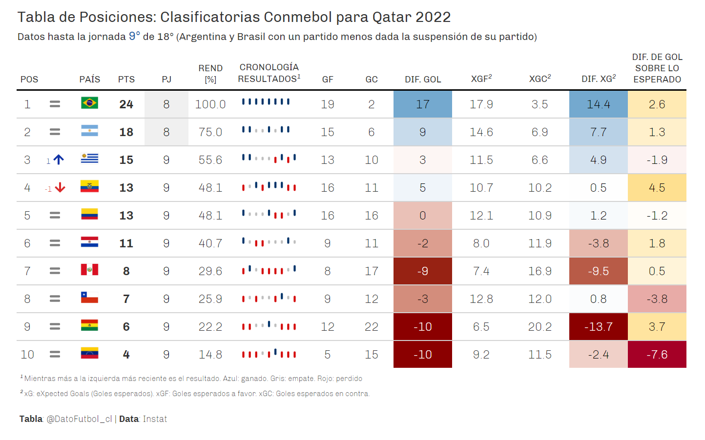

Hello there!
I’m Ismael Gómez Schmidt (Bustami) from Chile and this is my project DATO FUTBOL, which is focused on to develop and to share different content related to the field of Football (Soccer) Analytics and at the same time works as my portfolio.
The following list contains the multiple services that I could provide for you based on my programming, statistical, data visualization and general data science skills.
1) Customized data science tools development
- R package {soccerAnimate} to do 2D spatial animation using soccer tracking data Github repo.

- Interactive data apps using the {shiny} R package Scouting platform MVP

2) Data visualization
Eventing data
Shotmap 
Passing Network 
Heatmap

- Passmap

Historical data (journalism)
- Champions ranking evolution

- Team profile: age vs minutes played share

- Positions table

4) Online courses/conferences/webinars/blogging
LPDT Course: Capacitación en estadística y programación para fútbol
Conferences (Spanish):
2020 - Datalatam (slides + video)
2020 - R users Chile: Ejemplos de uso de datos en fútbol y hockey sobre hielo
2019 - Seminario Fútbol Analytics UAI: La revolución de los datos en Soccer Analytics
2018 - SatRday Santiago: Una mirada al Soccer Analytics usando R
- Articles in Medium (Spanish)
5) Tools/Knowledge/Skills
- RStudio (R + tidyverse + shiny + ..)
- data cleaning/processing/modelling/visualization
- Related knowledge of Sports Analytics: statistics, regression (linear, posisson, binomial, etc.), xG, PSxG, VAEP, GBM, clustering, players similarity, passing networks, shotmaps, radar plots, percentiles, event/tracking data
- Ice hockey and Soccer Analytics
The whole project also considers a Github repository and a Twitter account.
If you have any request don’t hesitate to contact me by either the email ismaelgomezs@gmail.com or LinkedIn
This blog has been created using RStudio and the R package blogdown.